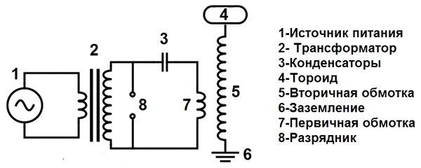
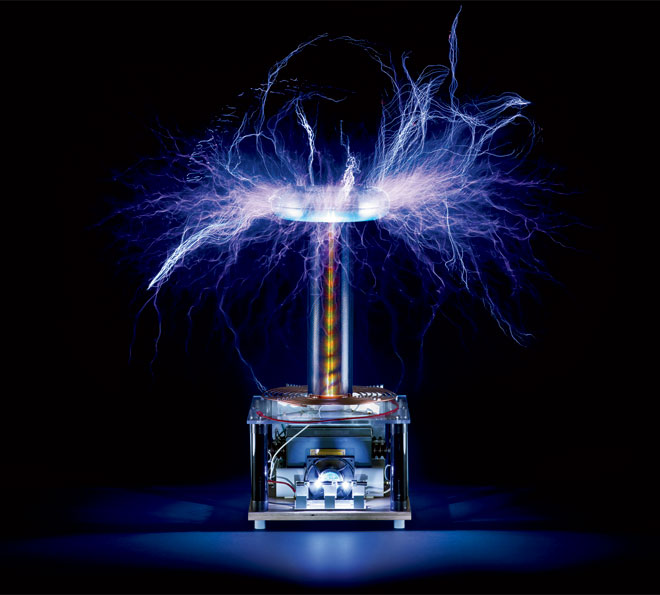

Одним из знаменитых изобретений Николы Тесла была катушка Тесла. Это изобретение представляет собой резонансный трансформатор, который образует высокочастотное повышенное напряжение. В 1896 году на изобретение выдан патент, который имел название аппарата для образования электрического тока высокого потенциала и частоты.
Устройство и работа
Элементарный трансформатор Тесла включает в себя две катушки, тороид, конденсатор, разрядник, защитное кольцо и заземление.

Тороид выполняет несколько функций:
- Снижение частоты резонанса, особенно для вида катушки Тесла с полупроводниковыми ключами.Полупроводниковые элементы плохо функционируют на повышенных частотах.
- Накапливание энергии перед возникновением электрической дуги. Чем больше размер тороида, тем больше энергии накоплено. В момент пробоя воздуха тороид выдает эту накопленную энергию в электрическую дугу, при этом увеличивая ее.
- Образование электростатического поля, отталкивающего дугу от вторичной обмотки. Часть этой функции исполняет вторичная обмотка. Однако тороид помогает ей в этом. Поэтому электрическая дуга не бьет во вторичную обмотку по кратчайшему пути.

Обычно наружный диаметр тороида в два раза больше диаметра вторичной обмотки. Тороиды производят из алюминиевой гофры и других материалов.
Вторичная обмотка трансформатора Тесла является основным элементом конструкции. Обычно длина обмотки относится к ее диаметру 5 : 1. Диаметр проводника для катушки выбирают из расчета, чтобы разместилось около 1000 витков, которые должны располагаться плотно между собой. Витки обмотки покрывают несколькими слоями лака или эпоксидной смолы. В качестве каркаса выбирают ПВХ-трубы, которые можно купить в строительном магазине.
Защитное кольцо служит для предохранения от выхода из строя электронных элементов в случае попадания электрической дуги в первичную обмотку. Защитное кольцо устанавливается, если размер стримера (электрической дуги) больше длины вторичной катушки. Это кольцо выполнено в виде медного незамкнутого проводника, заземленного отдельным проводом на общее заземление.
Первичная обмотка чаще всего выполняется из медной трубки, применяемой в кондиционерах. Сопротивление первичной обмотки должно быть небольшим, так как по ней будет проходить большая сила тока. Трубку чаще всего выбирают толщиной 6 мм. Также можно использовать для намотки проводники большого сечения. Первичная обмотка является своеобразным элементом подстройки в таких катушках Тесла, в которых первый контур резонансный. Поэтому место подключения питания выполняют с учетом его перемещения, с помощью которого меняют частоту резонанса первого контура.
Виды эффектов от катушки Тесла

- Дуговой разряд – возникает во многих случаях. Он характерен ламповым трансформаторам.
- Коронный разряд является свечением воздушных ионов в электрическом поле повышенного напряжения, образует голубоватое красивое свечение вокруг элементов устройства с высоким напряжением, а также имеющим большую кривизну поверхности.
- Спаркпо-другому называют искровым разрядом. Он протекает от терминала на землю, либо на заземленный предмет, в виде пучка ярких разветвленных полосок, быстро исчезающих или меняющихся.
- Стримеры – это тонкие слабо светящиеся разветвляющиеся каналы, содержащие ионизированные атомы газа и свободные электроны. Они не уходят в землю, а протекают в воздух. Стримером называют ионизацию воздуха, образуемую полем трансформатора высокого напряжения.
Действие катушки Тесла сопровождается треском электрического тока. Стримеры могут превращаться в искровые каналы. Это сопровождается большим увеличением тока и энергии. Канал стримера быстро расширяется, давление резко повышается, поэтому образуется ударная волна. Совокупность таких волн подобен треску искр.
Малоизвестные эффекты катушки Тесла
Некоторые люди считают трансформатор Тесла каким-то особенным устройством, обладающим исключительными свойствами. Также есть мнение, что такое устройство способно стать генератором энергии и вечным двигателем.
Иногда говорят, что при помощи такого трансформатора можно передавать электрическую энергию на значительные расстояния, не используя провода, а также создать антигравитацию. Такие свойства не подтверждены и не проверены наукой, но Тесла говорил о скорой доступности таких способностей для человека.
В медицине при длительном воздействии токов высокой частоты и напряжения могут образоваться хронические заболевания и другие отрицательные явления. Также нахождение человека в поле высокого напряжения негативно сказывается на его здоровье. Можно отравиться газами, выделяемыми при функционировании трансформатора без вентиляции.
Применение
- Величина напряжения на выходе катушки Тесла иногда достигает миллионов вольт, что формирует значительные воздушные электрические разряды длиной в несколько метров. Поэтому такие эффекты применяют в качестве создания показательных шоу.
- Катушка Тесла нашла применение в медицине в начале прошлого века. Больных обрабатывали маломощными токами высокой частоты. Такие токи протекают по поверхности кожи, оказывают оздоравливающее и тонизирующее влияние, не причиняя при этом никакого вреда организму человека. Однако мощные токи высокой частоты оказывают негативное влияние.
- Катушка Тесла применяется в военной технике для оперативного уничтожения электронной техники в здании, на корабле, танке. При этом на короткий промежуток времени создается мощный импульс электромагнитных волн. В результате в радиусе нескольких десятков метров сгорают транзисторы, микросхемы и другие электронные компоненты. Это устройство действует абсолютно бесшумно. Существуют такие данные, что частота тока при функционировании такого устройства может достигать 1 ТГц.
- Иногда такой трансформатор применяется для розжига газоразрядных ламп, а также поиска течи в вакууме.
Эффекты катушки Тесла иногда используют в съемках фильмов, компьютерных играх. В настоящее время катушка Тесла не нашла широкого применения на практике в быту.